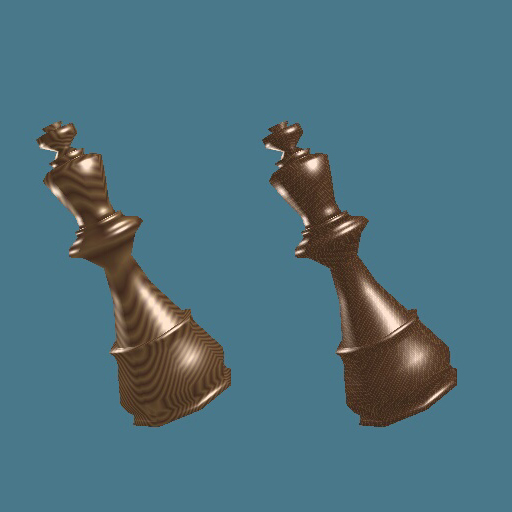
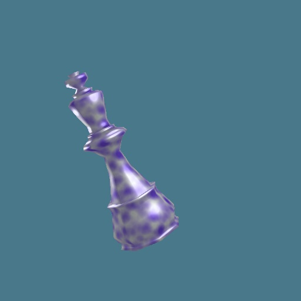
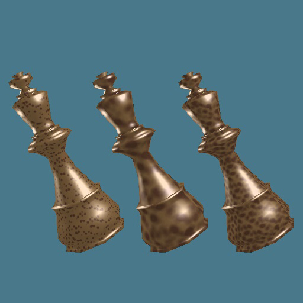

Solid Procedural Texturing:
Given a position in 3 Dimensions (a position in object space) return the color of the surface at that point. This provides 3D textures, such as wood, fudge marble cake, regular (stone) marble, &c.

The chess piece on the left uses a regular 'cylindrical' wood grain. The distance from a skewed axis is used to determine if tan or brown should be drawn. This distance is perturbed slightly to provide variety. The tan and brown colors bleed slightly into one another for a smooth transition. On the right is a failure at a more complicated wood grain. Well, it's not so much of a failure, as it looks 'ok'. I was attempting to produce a very compacted gnarled wood grain. The result is just sort of random brown and tan.


These objects all use the same 'blob' procedural texture. This works off of a metaball algorithm. Basically, space is filled with random seed points. When drawing a point the distance to all seed points is calculated and then processed through some decreasing function (such as 1/x or floor(1-x)). All results of this function are summed together (this is what creates the 'blobby' effect). High and low threshold parameters are set, and the sum is clamped between these. Then two colors are interpolated between these values.
The top picture is a very poor marble. It wasn't really intended to look like marble at all, but it sort of did. It doesn't make a very good marble because it doesn't use layering of colors or turbulence.
The bottom picture is my attempt at using this for a cork or worm eaten wood. I'm not convinced personally, they just look spotty/blotchy to me.
copyright 2/14/1999 Vince Scheib